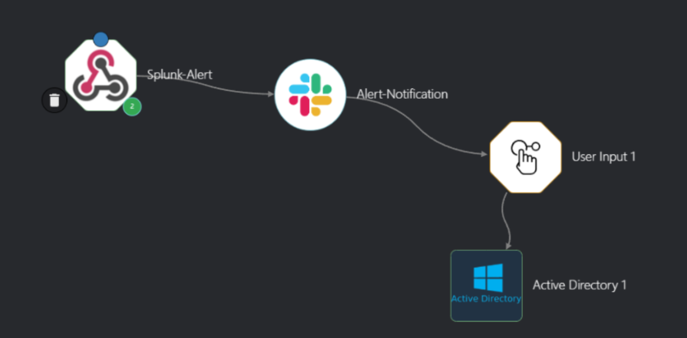
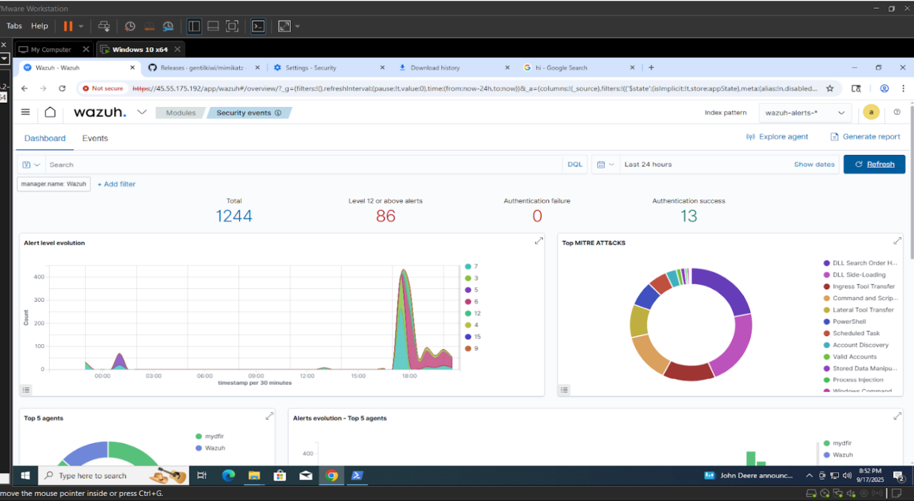

Active Directory Security Project
Sep 2025 - Oct 2025
Designed and implemented a robust security monitoring and automated response system focused on the Active Directory (AD) environment. By ingesting AD security events into Splunk, I established a centralized platform for threat detection. I developed a suite of custom alerts that triggered an automated SOAR workflow in Shuffle, engineered to automatically disable compromised user accounts upon detection. This significantly reduced MTTR while providing instantaneous notifications via Slack and email.
SOC Automation Lab
May 2025 - Jul 2025
Configured Wazuh as a SIEM system on a virtual machine to analyze over 1,000 logs and identify anomalies. I developed custom detection rules and implemented a Shuffle SOAR workflow to automate responses, such as blocking suspicious IPs and validating file hashes through VirusTotal. This platform was integrated with TheHive to generate actionable alerts and streamline the security operations process through automated analyst notifications.